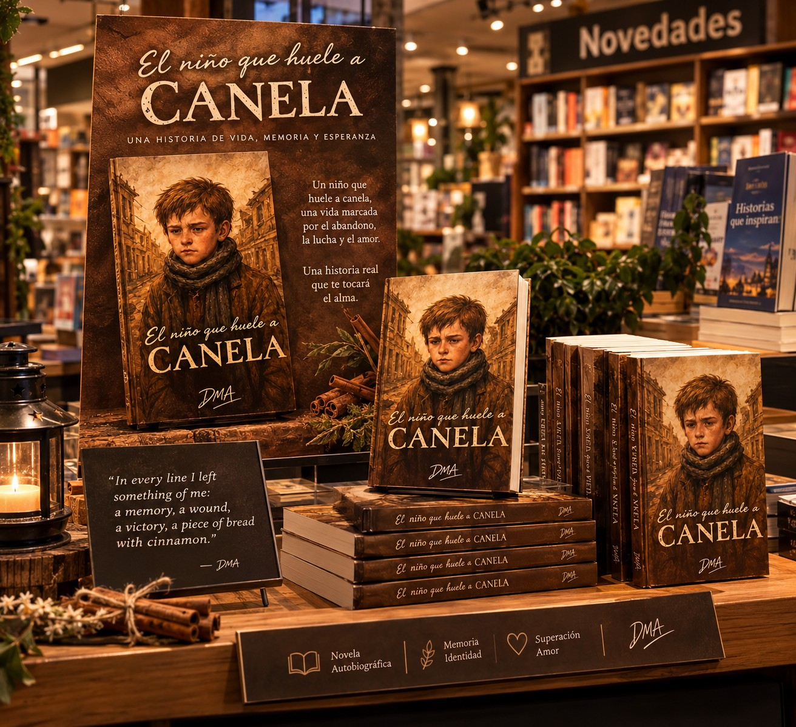

El niño que huele a canela
Una memoria de infancia, cocina y búsqueda de un hogar.
Sinopsis y ediciones
David Maroto vuelve sobre una infancia marcada por los centros de menores y la búsqueda de un hogar. Entre fogones descubre un oficio y una forma de cuidar. Ya adulto, la escritura le permite volver a esos recuerdos y darles un lugar en su historia.
De los aromas de la cocina a las preguntas sobre la pertenencia, el libro sigue el hilo que une al niño que fue con el hombre que lo cuenta.
Género · Memoria autobiográfica
Ediciones · Diversidad Literaria y libro digital en Google Play
Ficha de la editorial ↗
Edición digital en Google Play ↗